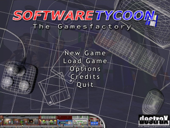
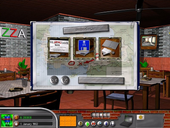

Software Tycoon
Dieser Artikel wurde für die folgenden Ubuntu-Versionen getestet:
Ubuntu 16.04 Xenial Xerus
Zum Verständnis dieses Artikels sind folgende Seiten hilfreich:
Software Tycoon  ist eine kommerzielle Wirtschaftssimulation, welche in den frühen Achtzigern spielt. Die Aufgabe als Gründer einer Softwareschmiede Anfang der 80er Jahre ist es, im gnadenlosen Wettbewerb um Marktanteile im Spielemarkt zu bestehen.
ist eine kommerzielle Wirtschaftssimulation, welche in den frühen Achtzigern spielt. Die Aufgabe als Gründer einer Softwareschmiede Anfang der 80er Jahre ist es, im gnadenlosen Wettbewerb um Marktanteile im Spielemarkt zu bestehen.
In den frühen Achtzigern schossen Softwarefirmen überall auf der Welt wie Pilze aus dem Boden; es war die Geburtsstunde eines neuen Industriezweiges. Computer und Konsolen zogen triumphal zuerst in die Wohnungen ein und verbreiteten sich rasend schnell vom heimischen Fernseher aus auch in die Kinderzimmer und Büros.
Aber man sollte nicht vergessen, dass die Mitbewerber, die man mit Sätzen wie "Wettbewerb ist gut für's Geschäft" einlullt, in Wahrheit Konkurrenten sind, die man lieber heute als morgen vor dem Konkursrichter sehen möchte.
|  |  |
| Menü | Spieleszene |
Installation¶
Für die Installation wird ein Installer von LGP genutzt. Da die Routine von der Spiele-CD veraltet ist sollte man von holarse-linuxgaming.de  den aktuellen Installer new_installer.run herunterladen und zur Installation nutzen.
den aktuellen Installer new_installer.run herunterladen und zur Installation nutzen.
Um Software Tycoon zu installieren [2], führt man das Skript new_installer.run im Terminal [1] aus:
./new_installer.run
oder alternativ die Installerdatei ausführbar machen und direkt aus dem Downloadordner raus starten.
Problembehebung¶
Kein Sound¶
Sofern das Spiel nicht auf die Soundkarte zugreifen kann installiert [3] man das Paket:
pulseaudio-utils
 mit apturl
mit apturl
Paketliste zum Kopieren:
sudo apt-get install pulseaudio-utils
sudo aptitude install pulseaudio-utils
und erweitert den Startbefehl des Spiels mit einem vorangestellten padsp oder pasuspender:
padsp tycoon
oder
pasuspender tycoon

Infobox¶
| Software Tycoon | |
| Genre: | Strategie |
| Sprache: |  |
| Veröffentlichung: | 2006 |
| Publisher: | Linux Game Publishing |
| Systemvoraussetzungen (Mindestanforderungen): | Pentium 300 / 48 MB RAM / 60 MB Festplattenplatz |
| Medien: | CD (1) |
| Strichcode / EAN / GTIN: | 835551000120 |
| Läuft mit: | nativ |
- Erstellt mit Inyoka
-
 2004 – 2017 ubuntuusers.de • Einige Rechte vorbehalten
2004 – 2017 ubuntuusers.de • Einige Rechte vorbehalten
Lizenz • Kontakt • Datenschutz • Impressum • Serverstatus -
Serverhousing gespendet von